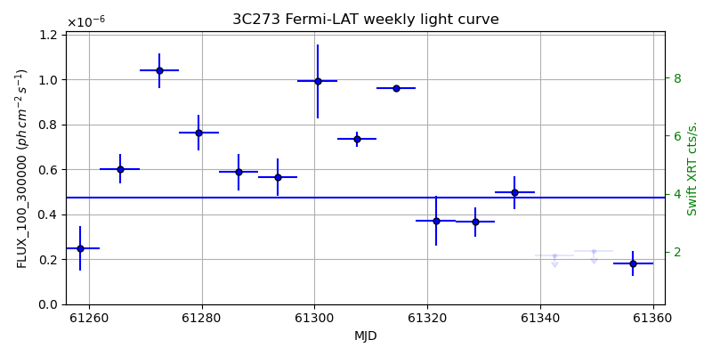

LAT Lightcurve site: https://fermi.gsfc.nasa.gov/ssc/data/access/lat/msl_lc/source/3C_273
Swift site: https://www.swift.psu.edu/monitoring/source.php?source=3C273
NED: Query
Time of last update of this page: UT: 2026-11-28 16:24 (MJD: 61372.684)
| Property | Value |
|---|---|
| R.A. | 12:29:06.72 |
| Dec. | 2:03:07.2 |
| z | 0.158 |
| 3FGL SpectrumType | LogParabola |
| 3FGL PL Index | |
| 3FGL Flux_100_300000 | 4.75e-07 1 / (s cm2) |
| 3FGL Flux_1000_300000 | 1.20e-08 1 / (s cm2) |
| 3FGL Flux >200 GeV | 4.06e-13 1 / (s cm2) |
| 3FGL Extrap. Crab >200 GeV | 0.00 |
| 3FGL Flux After EBL Absorption >200GeV | 2.71e-13 1 / (s cm2) |
| 3FGL EBL Crab Fraction >200GeV | 0.00 |
| MJD | dMJD | Flux | dFlux | Frac3FGL | FracCrab>200GeV | EBLFracCrab>200GeV |
|---|---|---|---|---|---|---|
| 61367.50 | 0.50 | 3.58e-07 | 0.00e+00 | 0.00 | 0.00 | 0.00 |
| 61368.50 | 0.50 | 3.98e-07 | 0.00e+00 | 0.00 | 0.00 | 0.00 |
| 61369.50 | 0.50 | 2.96e-07 | 0.00e+00 | 0.00 | 0.00 | 0.00 |
| 61370.50 | 0.50 | 2.53e-07 | 4.83e-08 | 0.53 | 0.00 | 0.00 |
| 61371.50 | 0.50 | 3.44e-07 | 0.00e+00 | 0.00 | 0.00 | 0.00 |

| MJD | dMJD | Flux | dFlux | Frac3FGL | FracCrab>200GeV | EBLFracCrab>200GeV |
|---|---|---|---|---|---|---|
| 61335.50 | 3.50 | 4.98e-07 | 7.37e-08 | 1.05 | 0.00 | 0.00 |
| 61342.50 | 3.50 | 2.18e-07 | 0.00e+00 | 0.00 | 0.00 | 0.00 |
| 61349.50 | 3.50 | 2.37e-07 | 0.00e+00 | 0.00 | 0.00 | 0.00 |
| 61356.50 | 3.50 | 1.81e-07 | 5.45e-08 | 0.38 | 0.00 | 0.00 |
| 61363.50 | 3.50 | 2.22e-07 | 4.64e-08 | 0.47 | 0.00 | 0.00 |

| MJD | dMJD | Flux | dFlux | Frac3FGL | FracCrab>200GeV | EBLFracCrab>200GeV |
|---|---|---|---|---|---|---|
| 61367.50 | 0.50 | 1.16e-08 | 0.00e+00 | 0.00 | 0.00 | 0.00 |
| 61368.50 | 0.50 | 1.47e-08 | 0.00e+00 | 0.00 | 0.00 | 0.00 |
| 61369.50 | 0.50 | 2.51e-08 | 0.00e+00 | 0.00 | 0.00 | 0.00 |
| 61370.50 | 0.50 | 3.01e-08 | 0.00e+00 | 0.00 | 0.00 | 0.00 |
| 61371.50 | 0.50 | 1.78e-08 | 0.00e+00 | 0.00 | 0.00 | 0.00 |

| MJD | dMJD | Flux | dFlux | Frac3FGL | FracCrab>200GeV | EBLFracCrab>200GeV |
|---|---|---|---|---|---|---|
| 61335.50 | 3.50 | 1.31e-08 | 3.48e-09 | 1.09 | 0.00 | 0.00 |
| 61342.50 | 3.50 | 3.71e-09 | 0.00e+00 | 0.00 | 0.00 | 0.00 |
| 61349.50 | 3.50 | 1.67e-08 | 0.00e+00 | 0.00 | 0.00 | 0.00 |
| 61356.50 | 3.50 | 4.19e-09 | 0.00e+00 | 0.00 | 0.00 | 0.00 |
| 61363.50 | 3.50 | 6.36e-09 | 0.00e+00 | 0.00 | 0.00 | 0.00 |
--------------------------------------------------------- Using user-supplied coords: 12:29:06.72 2:03:07.2 2000 --------------------------------------------------------- FLWO UT night of: 2026-11-29 Local Sid. @ Midnight: 04:08 Sunset (-15.0) (local, UT): 18:31 01:31 Sunrise (-15.0) (local, UT): 05:53 12:53 Moonrise (local, UT): 21:57 04:57 Moonset (local, UT): Moon phase: 0.72 --------------------------------------------------------- AzTime LSID UT Obj_el Obj_az Mn_el Mn_az Sep. --------------------------------------------------------- 18:31 22:39 01:31 -47.3 316.6 -32.9 32.1 57.2 19:01 23:09 02:01 -51.3 326.4 -29.4 38.9 56.8 19:31 23:39 02:31 -54.3 337.8 -25.4 45.0 56.4 20:01 00:09 03:01 -56.1 350.6 -21.0 50.6 56.1 20:31 00:39 03:31 -56.4 4.1 -16.2 55.6 55.7 21:01 01:09 04:01 -55.2 17.3 -11.1 60.2 55.4 21:31 01:39 04:31 -52.6 29.4 -5.4 64.5 55.1 22:01 02:09 05:01 -49.0 39.8 0.4 68.5 54.7 22:31 02:39 05:31 -44.5 48.6 5.8 72.2 54.4 23:01 03:10 06:01 -39.4 56.1 11.6 75.8 54.1 23:31 03:40 06:31 -33.9 62.5 17.5 79.4 53.9 00:01 04:10 07:01 -28.1 68.0 23.6 82.9 53.6 00:31 04:40 07:31 -22.1 73.0 29.7 86.5 53.4 01:01 05:10 08:01 -15.9 77.5 35.8 90.3 53.1 01:31 05:40 08:31 -9.6 81.7 42.0 94.4 52.9 02:01 06:10 09:01 -2.0 85.8 48.1 99.1 52.7 02:31 06:40 09:31 3.4 89.7 54.2 104.7 52.5 03:01 07:10 10:01 9.6 93.7 60.1 111.7 52.3 03:31 07:40 10:31 16.0 97.8 65.6 121.1 52.1 04:01 08:10 11:01 22.3 102.1 70.5 134.7 51.9 04:31 08:40 11:31 28.4 106.8 74.0 154.7 51.7 05:01 09:11 12:01 34.5 112.1 75.2 181.1 51.5 05:31 09:41 12:31 40.3 118.1 73.6 206.8 51.3 05:53 10:02 12:53 44.2 123.1 71.0 221.2 51.2 --------------------------------------------------------- Dark hours >55 deg.: 0.00